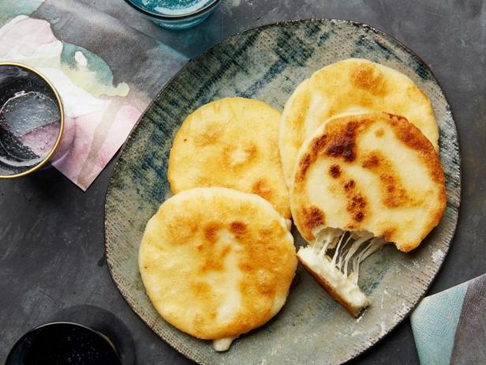
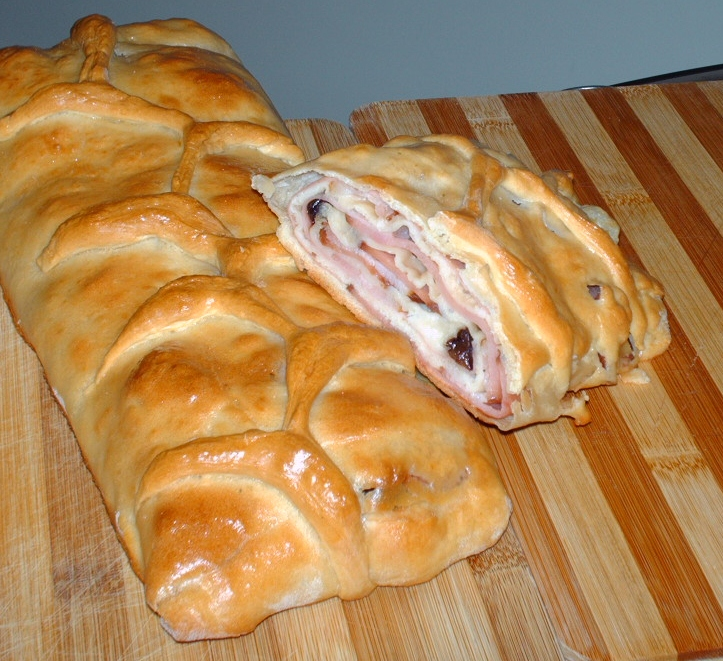
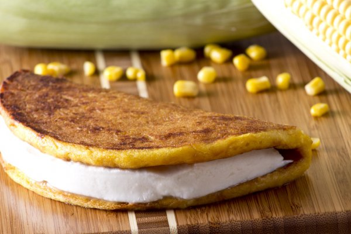
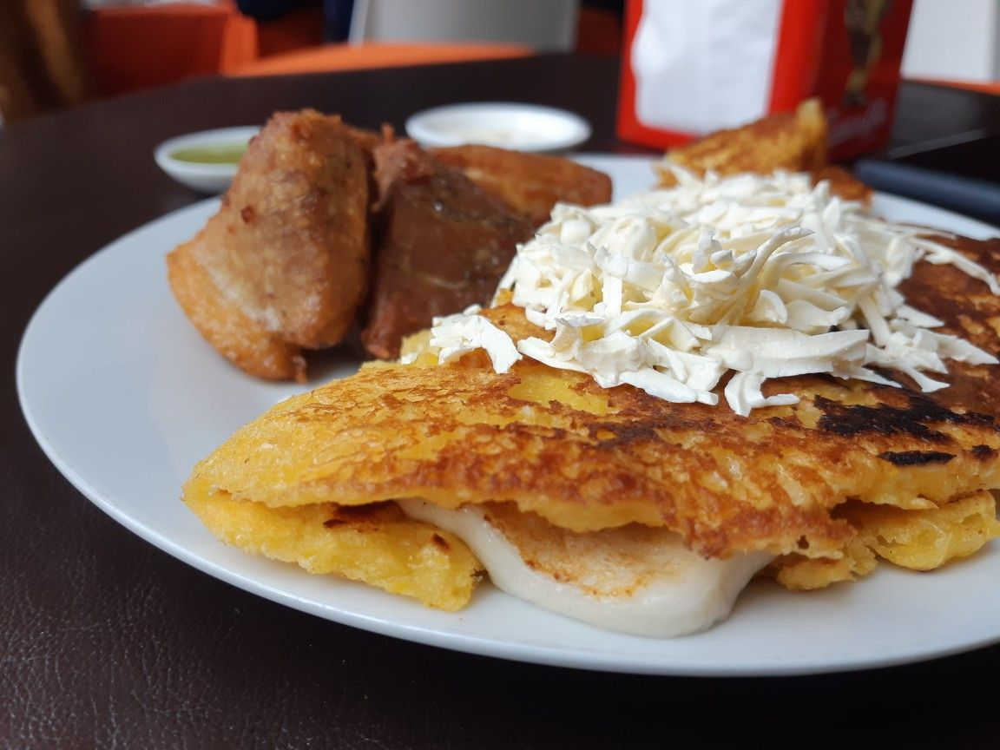
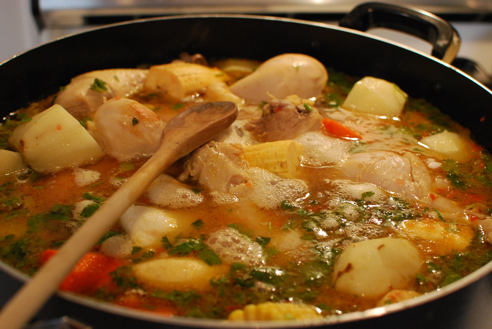
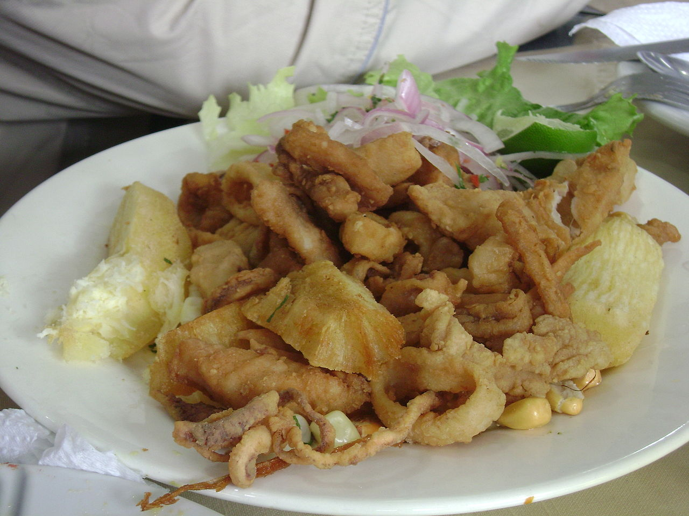

____
Традиционная еда
Арепа — лепёшка из кукурузного теста или из кукурузной муки, занимающая важное место в кухнях Колумбии и Венесуэлы.

Ветчинный хлеб — типичное рождественское блюдо в Венесуэле, хлеб, начинённый ветчиной или беконом, с добавлением изюма и оливок, которые, как правило, начинены болгарским или острым красным перцем. В настоящее время существует несколько рецептов приготовления ветчинного хлеба, отличающихся по ингредиентам. В некоторых рецептах предусматривается ветчина из индюшатины или сливочный сыр или используется слоёное тесто.

Качапа — традиционное венесуэльское блюдо, приготовляемое из кукурузы. Как и arepa, качапа популярна в придорожных торговых точках. Качапы делают подобно блинам из свежего кукурузного теста или заворачивают в сухие кукурузные листья и отваривают.

Кесо де мано — мягкий, белый сыр, производимый в Венесуэле. Сыр многим напоминает итальянскую моцареллу. Кесо де мано часто употребляется в качестве начинки для таких блюд, как качапа и арепа. Сыр изготовляется из коровьего молока с примесью овечьего.

Санкочо — густой суп, распространённый в некоторых латиноамериканских странах. Готовится из мяса, клубней и овощей с приправами. Может также делаться из птицы, в прибрежных областях часто из рыбы. Существует множество региональных вариантов, однако технология приготовления одинакова — все ингредиенты варятся в одной ёмкости.

Чичаррон — блюдо, приготовляемое из жареной свиной шкуры. Иногда делают из курятины, баранины или говядины.

____